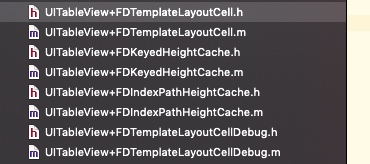
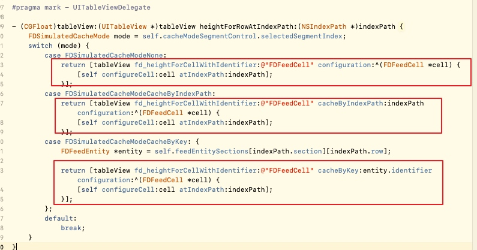

UITableView-FDTemplateLayoutCell源码学习
前言
该框架是前百度员工孙大神开源的一个用于动态计算cell高度框架，通过该框架对cell的高度进行计算并缓存。从而优化UITableView的流畅性。
框架文件结构

该框架比较文件结构简单，一共只有4个类（8个文件）。
UITableView+FDIndexPathHeightCache ：以index path为key缓存高度的具体实现
UITableVIew+FDKeyedHeightCache ：以自定义的key缓存高度的具体实现
UITableView+FDTemplateLayoutCell ：对外提供的接口文件
UITableView+FDTemplateLayoutCellDebug ：给分类添加了一个fd_debugLogEnabled，通过设置该属性来控制是否打印日志。
使用方式
使用方式分为三种，分别为无缓存，通过index path缓存，通过key缓存。使用方式分别如下所示：

可以看到方法的使用时机为在UITableViewDelegate委托协议中的计算高度方法中。
不缓存高度的实现方式
首先我们来看第一个方法- (CGFloat)fd_heightForCellWithIdentifier:(NSString *)identifier configuration:(void (^)(id cell))configuration的实现方式。
- (CGFloat)fd_heightForCellWithIdentifier:(NSString *)identifier configuration:(void (^)(id cell))configuration {
if (!identifier) {
return 0;
}
UITableViewCell *templateLayoutCell = [self fd_templateCellForReuseIdentifier:identifier];
// Manually calls to ensure consistent behavior with actual cells. (that are displayed on screen)
[templateLayoutCell prepareForReuse];
// Customize and provide content for our template cell.
if (configuration) {
configuration(templateLayoutCell);
}
return [self fd_systemFittingHeightForConfiguratedCell:templateLayoutCell];
}
可以看到实现主要分为三部分，第一部分为通过- (__kindof UITableViewCell *)fd_templateCellForReuseIdentifier:(NSString *)identifier方法获取一个cell。这里我们先看一下该方法如何获取的，该方法的实现如下所示：
- (__kindof UITableViewCell *)fd_templateCellForReuseIdentifier:(NSString *)identifier {
NSAssert(identifier.length > 0, @"Expect a valid identifier - %@", identifier);
NSMutableDictionary<NSString *, UITableViewCell *> *templateCellsByIdentifiers = objc_getAssociatedObject(self, _cmd);
if (!templateCellsByIdentifiers) {
templateCellsByIdentifiers = @{}.mutableCopy;
objc_setAssociatedObject(self, _cmd, templateCellsByIdentifiers, OBJC_ASSOCIATION_RETAIN_NONATOMIC);
}
UITableViewCell *templateCell = templateCellsByIdentifiers[identifier];
if (!templateCell) {
templateCell = [self dequeueReusableCellWithIdentifier:identifier];
NSAssert(templateCell != nil, @"Cell must be registered to table view for identifier - %@", identifier);
templateCell.fd_isTemplateLayoutCell = YES;
templateCell.contentView.translatesAutoresizingMaskIntoConstraints = NO;
templateCellsByIdentifiers[identifier] = templateCell;
[self fd_debugLog:[NSString stringWithFormat:@"layout cell created - %@", identifier]];
}
return templateCell;
}
可以看到该方法通过关联属性添加了一个templateCellsByIdentifiers字典属性，来保证相同的identifier第二次获取cell的时候不再重新获取，直接取的字典属性里面的值（cell）。
第二部分，通过configuration block让用户有机会对创建好的cell进行定制化
第三部分，针对frame layout 和 auto layout对cell进行高度的适应计算（包括判断辅助视图来调节cell的宽度等）
通过index Path来缓存的实现
首先来看一下- (CGFloat)fd_heightForCellWithIdentifier:(NSString *)identifier cacheByIndexPath:(NSIndexPath *)indexPath configuration:(void (^)(id cell))configuration方法的实现。
- (CGFloat)fd_heightForCellWithIdentifier:(NSString *)identifier cacheByIndexPath:(NSIndexPath *)indexPath configuration:(void (^)(id cell))configuration {
if (!identifier || !indexPath) {
return 0;
}
// Hit cache
if ([self.fd_indexPathHeightCache existsHeightAtIndexPath:indexPath]) {
[self fd_debugLog:[NSString stringWithFormat:@"hit cache by index path[%@:%@] - %@", @(indexPath.section), @(indexPath.row), @([self.fd_indexPathHeightCache heightForIndexPath:indexPath])]];
return [self.fd_indexPathHeightCache heightForIndexPath:indexPath];
}
CGFloat height = [self fd_heightForCellWithIdentifier:identifier configuration:configuration];
[self.fd_indexPathHeightCache cacheHeight:height byIndexPath:indexPath];
[self fd_debugLog:[NSString stringWithFormat: @"cached by index path[%@:%@] - %@", @(indexPath.section), @(indexPath.row), @(height)]];
return height;
}
该方法主要分为两部分，命中缓存的indexpath与没命中两部分处理。
第一部分为若命中indexpath缓存时的实现：
// Hit cache
if ([self.fd_indexPathHeightCache existsHeightAtIndexPath:indexPath]) {
[self fd_debugLog:[NSString stringWithFormat:@"hit cache by index path[%@:%@] - %@", @(indexPath.section), @(indexPath.row), @([self.fd_indexPathHeightCache heightForIndexPath:indexPath])]];
return [self.fd_indexPathHeightCache heightForIndexPath:indexPath];
}
该部分主要使用- (BOOL)existsHeightAtIndexPath:(NSIndexPath *)indexPath来判断是否命中indexPath缓存，实习细节如下：
- (BOOL)existsHeightAtIndexPath:(NSIndexPath *)indexPath {
[self buildCachesAtIndexPathsIfNeeded:@[indexPath]];
NSNumber *number = self.heightsBySectionForCurrentOrientation[indexPath.section][indexPath.row];
return ![number isEqualToNumber:@-1];
}
- (void)buildCachesAtIndexPathsIfNeeded:(NSArray *)indexPaths {
// Build every section array or row array which is smaller than given index path.
[indexPaths enumerateObjectsUsingBlock:^(NSIndexPath *indexPath, NSUInteger idx, BOOL *stop) {
[self buildSectionsIfNeeded:indexPath.section];
[self buildRowsIfNeeded:indexPath.row inExistSection:indexPath.section];
}];
}
- (void)buildSectionsIfNeeded:(NSInteger)targetSection {
[self enumerateAllOrientationsUsingBlock:^(FDIndexPathHeightsBySection *heightsBySection) {
for (NSInteger section = 0; section <= targetSection; ++section) {
if (section >= heightsBySection.count) {
heightsBySection[section] = [NSMutableArray array];
}
}
}];
}
- (void)buildRowsIfNeeded:(NSInteger)targetRow inExistSection:(NSInteger)section {
[self enumerateAllOrientationsUsingBlock:^(FDIndexPathHeightsBySection *heightsBySection) {
NSMutableArray<NSNumber *> *heightsByRow = heightsBySection[section];
for (NSInteger row = 0; row <= targetRow; ++row) {
if (row >= heightsByRow.count) {
heightsByRow[row] = @-1;
}
}
}];
}
可以看到上述方法的主要功能是调用buildCachesAtIndexPathsIfNeeded及其函数内的子方法来将所有比当前所传入的indexPath小的section以及row所组成的数组值赋值为-1（准确的描述为将当前indexPath的section和row与当前的高度缓存数组heightsBySectionForCurrentOrientation相比，将所有下标大于等于缓存数组下标并且小于等于indexpath的元素赋值为-1）；
之后根据当前的row是否等于-1，来判断是否命中缓存。
需要注意的是横屏和竖屏的高度可能存在不一致，所以需要设置heightsBySectionForPortrait和heightsBySectionForLandscape两个数组属性来分别保存高度，之后用heightsBySectionForCurrentOrientation来透明其中的判断过程。
若命中缓存则调用- (CGFloat)heightForIndexPath:(NSIndexPath *)indexPath该方法进行缓存高度获取。方法实现细节为：
- (CGFloat)heightForIndexPath:(NSIndexPath *)indexPath {
[self buildCachesAtIndexPathsIfNeeded:@[indexPath]];
NSNumber *number = self.heightsBySectionForCurrentOrientation[indexPath.section][indexPath.row];
#if CGFLOAT_IS_DOUBLE
return number.doubleValue;
#else
return number.floatValue;
#endif
}
第二部分为没有命中缓存时所遇到的情况：若没有命中缓存，则需要调用- (CGFloat)fd_heightForCellWithIdentifier:(NSString *)identifier configuration:(void (^)(id cell))configuration方法来计算相应的高度。该方法之前已经学习过，就不再废话了。 计算好高度之后需要调用- (void)cacheHeight:(CGFloat)height byIndexPath:(NSIndexPath *)indexPath方法来进行高度的缓存。
- (void)cacheHeight:(CGFloat)height byIndexPath:(NSIndexPath *)indexPath {
self.automaticallyInvalidateEnabled = YES;
[self buildCachesAtIndexPathsIfNeeded:@[indexPath]];
self.heightsBySectionForCurrentOrientation[indexPath.section][indexPath.row] = @(height);
}
根据上述实现可看到缓存的主要实现为 向self.heightsBySectionForCurrentOrientation数组中设置当前的高度值。
通过key来缓存的实现
该部分的主要使用- (CGFloat)fd_heightForCellWithIdentifier:(NSString *)identifier cacheByKey:(id<NSCopying>)key configuration:(void (^)(id cell))configuration方法来实现：
- (CGFloat)fd_heightForCellWithIdentifier:(NSString *)identifier cacheByKey:(id<NSCopying>)key configuration:(void (^)(id cell))configuration {
if (!identifier || !key) {
return 0;
}
// Hit cache
if ([self.fd_keyedHeightCache existsHeightForKey:key]) {
CGFloat cachedHeight = [self.fd_keyedHeightCache heightForKey:key];
[self fd_debugLog:[NSString stringWithFormat:@"hit cache by key[%@] - %@", key, @(cachedHeight)]];
return cachedHeight;
}
CGFloat height = [self fd_heightForCellWithIdentifier:identifier configuration:configuration];
[self.fd_keyedHeightCache cacheHeight:height byKey:key];
[self fd_debugLog:[NSString stringWithFormat:@"cached by key[%@] - %@", key, @(height)]];
return height;
}
可以看到基本也分为两个部分，命中缓存与未命中缓存的情况。
首先第一部分为命中缓存部分，该部分使用- (BOOL)existsHeightForKey:(id<NSCopying>)key来进行判断。
改函数实现细节为：
- (BOOL)existsHeightForKey:(id<NSCopying>)key {
NSNumber *number = self.mutableHeightsByKeyForCurrentOrientation[key];
return number && ![number isEqualToNumber:@-1];
}
可以看到该方法和indexpath的缓存类似。就不过多介绍了。
总结
该框架主要的功能及其实现即为上述这些：
1.提供两种缓存方式（cacheByIndexPath和cacheByKey）
2.支持frame 和 autolayout两种方式的高度计算（- (CGFloat)fd_heightForCellWithIdentifier:(NSString *)identifier configuration:(void (^)(id cell))configuration方法）。
3.利用runtime重写tableView的reloadData方法，来判断是否重置缓存标识以及判断是否清空缓存。

Copyright © 2017 Powered by LZH, Theme used GitHub CSS.